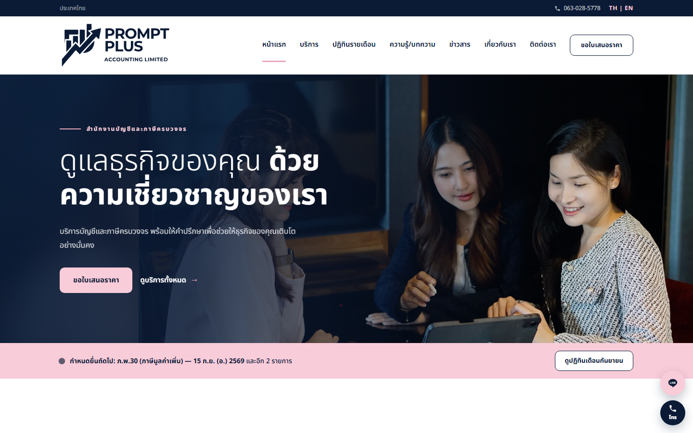
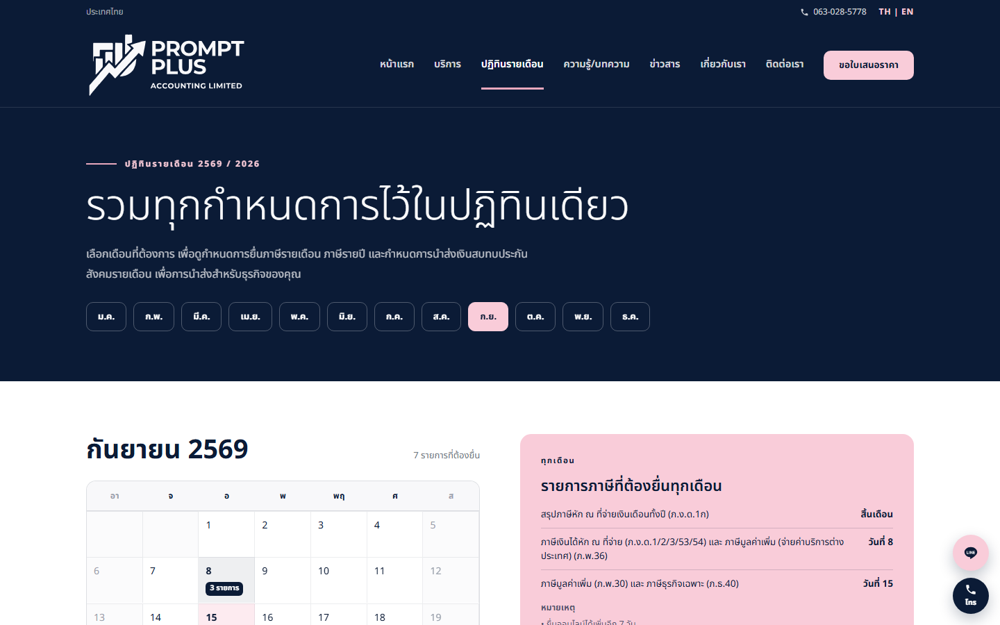
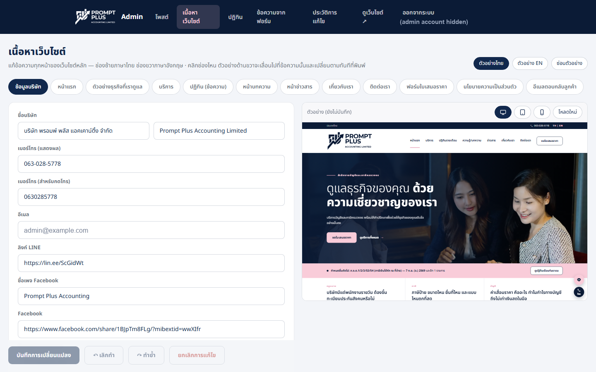

An accounting firm needed a website that its own staff could keep current: seven pages, two languages, articles and news posted weekly. Nobody in the office was going to run a deploy to change a phone number.
So the site reads all of its content from an API, and a second small app — the admin — writes it. The only thing that stays in code is the part that must not drift: the Thai statutory filing calendar, where a wrong due date is a fine rather than a typo.



Seven pages on react-router hash routing, so it drops onto any static host. Every string is a {th, en} pair, switchable on every page. Content is fetched at runtime, and if that fetch fails the app falls back to a snapshot bundled at build time — so the site never renders empty, and never renders twice.
Posts (articles and news, both languages) and site content. The editing forms are generated from the shape of the content JSON — add a field to content.json and the form picks it up with no admin code change. New posts appear on the site immediately; the home page pulls the three latest.
Serverless functions in Singapore, backed by a managed document store. The same service renders finished HTML for crawlers, so the marketing pages are readable without running JavaScript. Published content is public by design; everything that changes it sits behind the firm’s own Google accounts.
Everything editable is editable — except the filing calendar. Due dates for ภ.ง.ด.1/3/53, ภ.พ.30 and สปส.1-10 are monthly rules, with annual forms layered onto specific months. That is logic, not copy, so it lives in one module with the year at the top and is reviewed rather than typed into a CMS field.
/* Thai statutory filing data for the 2569 (2026) calendar.
Regulatory logic stays in code — page copy is admin-managed content. */
export const MONTHLY = [
["ภ.ง.ด.1/3/53", "PND1/3/53", "ภาษีหัก ณ ที่จ่าย", "Withholding tax", …, 7],
["ภ.พ.30", "PP30", "ภาษีมูลค่าเพิ่ม", "VAT return", …, 15],
["สปส.1-10", "SSO 1-10", "เงินสมทบประกันสังคม", "Social security", …, 15],
];
A hand-written form per page would have meant an admin release every time the firm wanted a new FAQ row or a price line. Instead the editor walks the content JSON and renders a field per leaf, grouped by page. Adding a field on the server is the whole change.
The trade is deliberate: the admin gains a field the moment the backend does, and no admin release is needed to expose it. The cost is that the editor must be defensive about shapes it has never seen — which is where most of its code went.
Releases run from CI, which is the usual place a long-lived cloud credential ends up sitting in a settings page forever. This one authenticates by short-lived federated identity instead, scoped to a single repository — so there is no key file to leak, rotate, or forget. Every release also re-checks the live site afterwards: response headers, crawler visibility, and a frame-by-frame check that the page does not repaint after first render.
Prospective clients ask what bookkeeping will cost before they ask anything else. Three steps — business type, volume, services — return an indicative fee on the page, so the first email arrives already qualified.
ADMIN_PASSWORD off the default and run behind HTTPS.The static HTML version that preceded this build is still in the repo for reference. Keeping it there was deliberate: it is the fastest way to show the client what changed, and it costs nothing to leave behind.